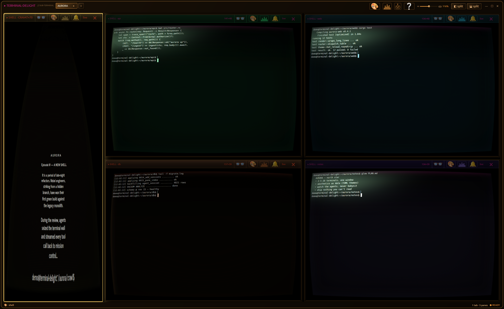
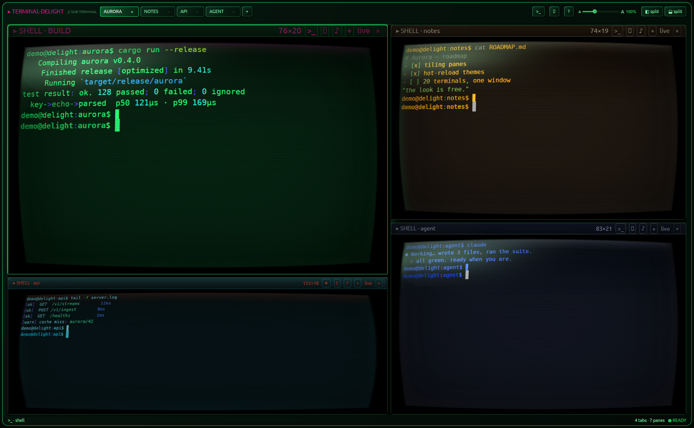
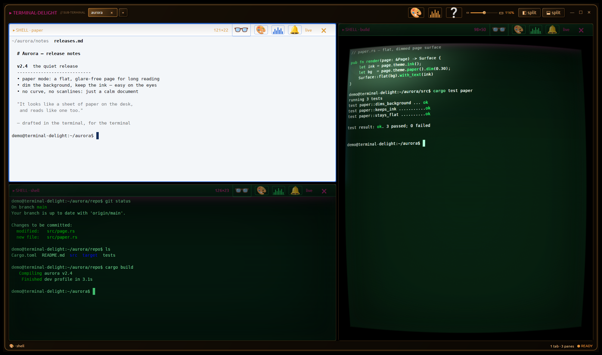
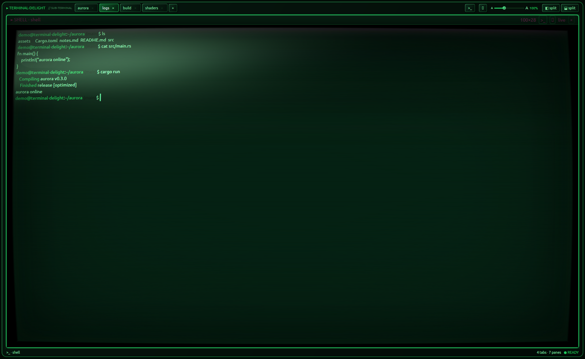
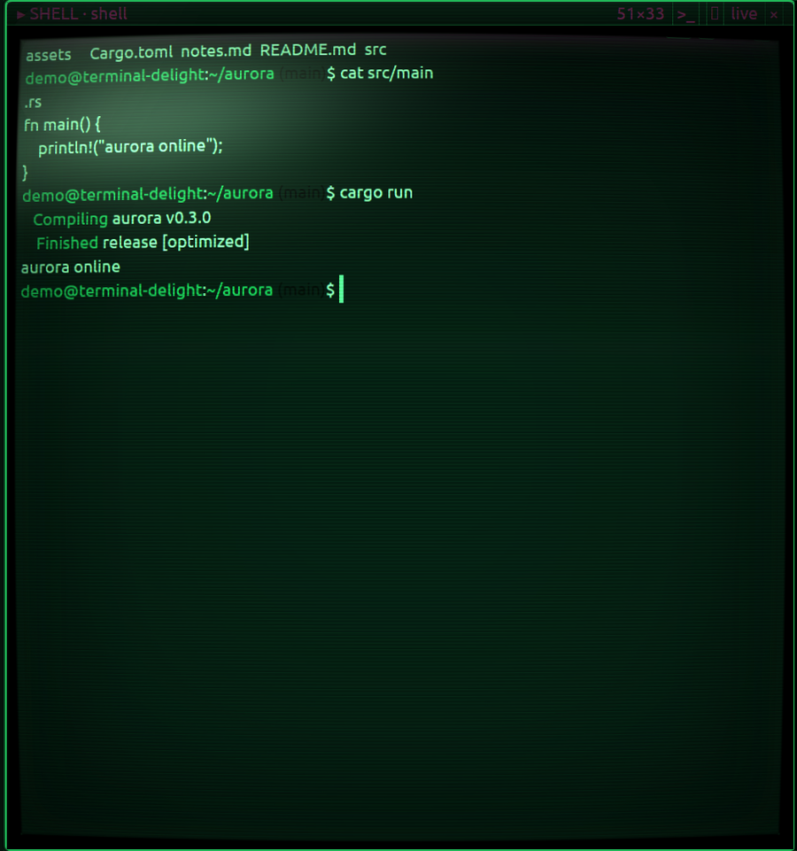
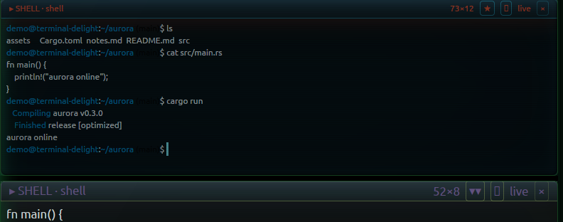
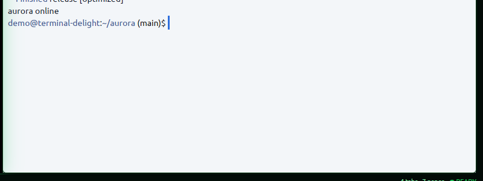
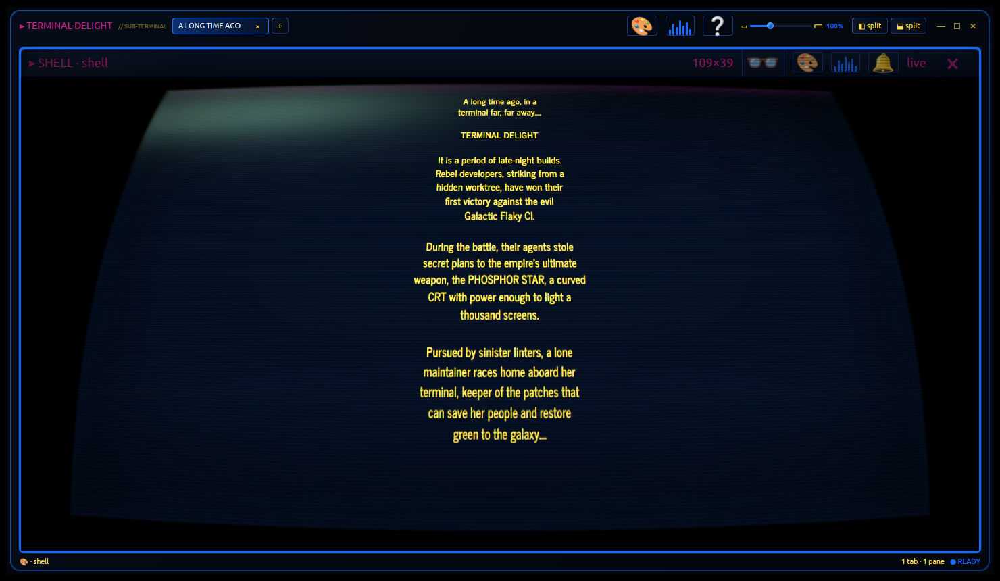
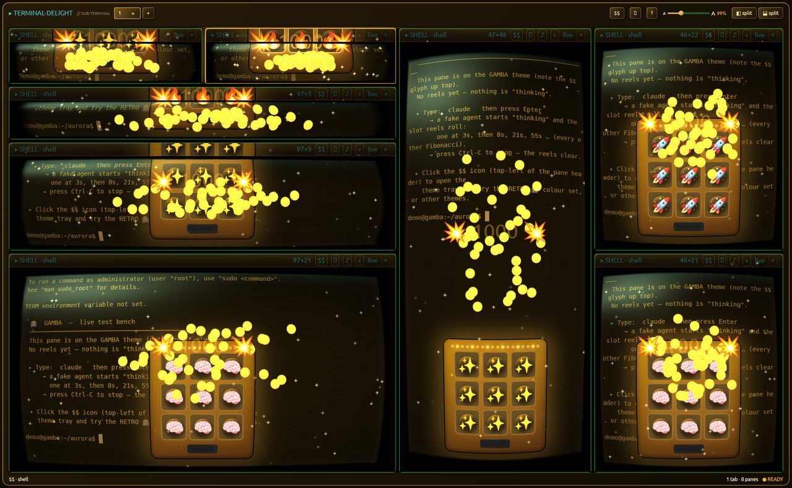
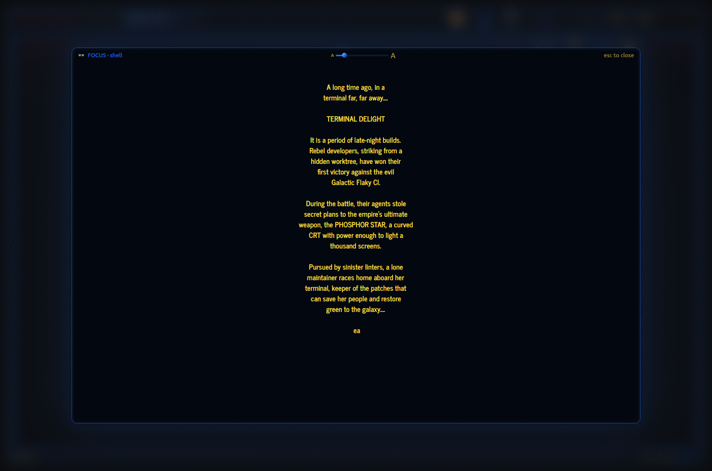

A GPU-native Linux terminal with a hot-reloadable, CRT-flavored visual identity.
Rust end-to-end: gpui renders every pixel on the GPU, alacritty_terminal does the VT emulation, your real shell runs on a real PTY. Tiling multi-pane, per-pane theming & monitor-OSD grading, scanlines and a real barrel warp.

Most terminals pick one: fast, or pretty. terminal-delight renders entirely on the GPU, so the CRT look — scanlines, glow, vignette, a genuine per-pane barrel warp — costs nothing at the keyboard. Key-to-echo lands at p50 ~121µs; seq 1 100000 finishes in 0.089s. The aesthetic is data: themes are TOML files you edit while the app runs, no recompile.
True tiling-tree splits that divide only the focused pane, tabs, sub-tab drag-to-split, and a pop-out scratch window with tear-off.
Four built-ins plus a live-editable custom slot read from ~/.config/terminal-delight/theme.toml and reloaded on save, ~300ms, no restart.
Theme and monitor-OSD grade groups inherit the workspace independently — each with a live, non-destructive "follow outer" toggle.
Brightness, contrast, colour, text, background, gamma — plus text size — global or per-pane, applied in HSLA at paint time.
Scanlines, vignette, glow and a real barrel warp via a vendored gpui renderer patch. Per-theme dials; fully off in light themes.
PTY + full VT emulation (bash, vim, top, tmux), 16/256/truecolor, scrollback, mouse selection, bracketed paste, live SIGWINCH resize.
A read-only MCP server: an orchestrator watches a wall of agent panes and is pushed the moment one calls a tool or finishes. stdio, never TCP — and it can't write a PTY. The use case ↓
custom TOML slotAgentic coding means a wall of agents — claude here, codex there, three more in tabs — and the hard part isn't running them, it's knowing what they're doing without babysitting every pane. terminal-delight already knows, per pane, who is running (claude / codex / shell), where (cwd), and which conversation. So we turned that into a read-only MCP server: an orchestrating agent connects over stdio and watches the whole wall.
The use case. An orchestrator launches terminal-delight as the wall, then over MCP it can list_panes (who's running where) and, with the feed on, gets pushed a notification the instant any agent calls a tool, appears, or goes quiet — so it can react: route the next task, ping you when a long build finishes, flag an agent that just ran something destructive, or restart one that wandered off. No polling. No scraping the screen — events come from each agent's own structured transcript.
# the orchestrator asks who's on the wall → list_panes tab 0 · build · CLAUDE · ~/proj · claude --resume a1b2… tab 1 · tests · CODEX · ~/proj/api · codex resume 9f0e… tab 2 · shell · SHELL · ~ (excluded — agents-only) # …then the server PUSHES, the moment it happens: notifications/message { "data": { "event": "tool_call", "pane": "build", "tool": "Bash", "summary": "cargo test --release" } } notifications/message { "data": { "event": "agent_vanished", "pane": "tests" } }
It ships behind a 🤖 robot button on the mother bar that opens an MCP CONTROL — READ ONLY panel: a master switch, an expose policy (agents-only / all), an events toggle, and a live list of every pane with a per-pane exposed dot. The danger in any agent-control surface is the write path (bytes into a shell = arbitrary code execution); that path simply does not exist here — the observe plane shipped first, alone.







They keep saying agentic coding is basically gambling. Fine. So we cut out the middleman and turned your terminal into a SLOT MACHINE. 🪙
Flip on the GAMBA theme and the second your AI agent starts "thinking," a 3×3 grid SPINS — reels clunking in left-to-right with that sweet last-reel tease — and it RE-ROLLS EVERY 10 SECONDS, all turn long. Line it up — a row, an X, a full blackout — and the whole terminal ERUPTS: coins spray everywhere, glitter bombs, a full 3-second RUMBLE. 💥
🔥 Payouts up to 1000✦ — redeemable for ABSOLUTELY NOTHING! No skill. No edge. No tokens back. Just you, the house, and that esc to interrupt dopamine. PULL THE LEVER. FEED THE MACHINE. SHIP NOTHING. The house always wins — and so does your cloud bill. (Results not guaranteed. Zero is guaranteed.)

Flip text crawl on for any pane and every line of the terminal renders in the iconic News-Gothic crawl face and recedes into the distance — centred, tapering toward the top, exactly like the opening crawl you're picturing.
It isn't a video or an overlay. The crawl perspective is a real GPU pre-map baked into the same CRT post-pass that already curves the glass, so it composes for free with the barrel warp, screen jiggle, tracking band, glare and phosphor — and costs one extra pow per pixel, no second render. Two dials in the DISPLAY tray, per-pane like everything else: angle (2–30°, how hard the sides converge) and depth (0.05–15×, the bottom-to-top text-size ratio). Open the 👓 FOCUS reader on a crawling pane and it inherits the look too.

terminal-delight renders on the GPU through gpui/wgpu — it isn't a webpage and a browser shell wouldn't be the real engine. So instead of a fake terminal, grab the source and run the actual app on your Linux box. The gallery above is all real captures; a recorded clip of the live warp is coming to the hero.
The goal: 2-to-20 real terminals in a single window — native-snappy, web-app polished, themeable at will, open source. A terminal you keep open because it's nice, not just because you have to.
terminal-delight is MIT — and so is the prebuilt AppImage. The pinned Zed/gpui graph would have linked GPL-3.0 crates into the binary, so we sever that edge at build time (docs/patches/0002); cargo deny passes with no GPL exceptions, so a redistributed binary carries no copyleft. Download it, or build from source — your choice.
It targets the freedesktop Linux desktop (X11 & Wayland) via gpui's wgpu renderer. Not macOS or Windows.
# deps (Ubuntu): Vulkan + build libs bash scripts/setup-deps.sh # clone the pinned Zed checkout + apply the td-crt-pass renderer patch bash scripts/prepare-gpui.sh # run it cd app && cargo run
gpui is consumed from a pinned Zed checkout carrying the td-crt-pass renderer patch (the per-pane barrel warp) — set up as a sibling zed-upstream/ directory, same as CI. Full instructions, the CI bar, and the clean-room rule are in CONTRIBUTING.md ↗.